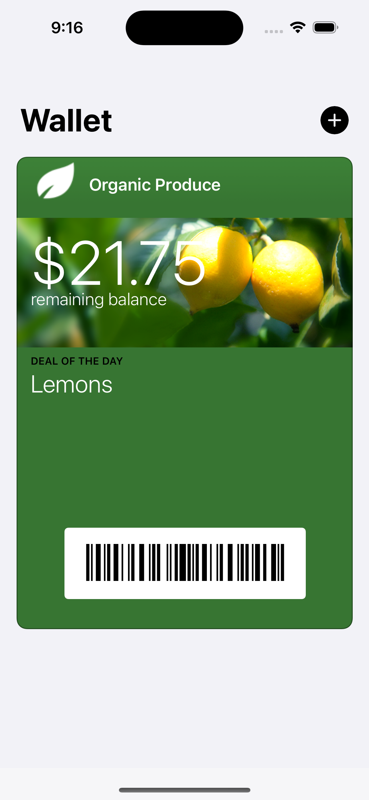
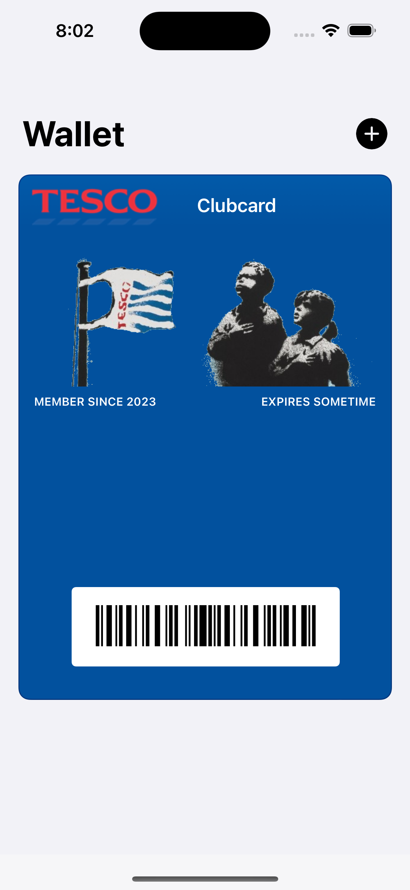
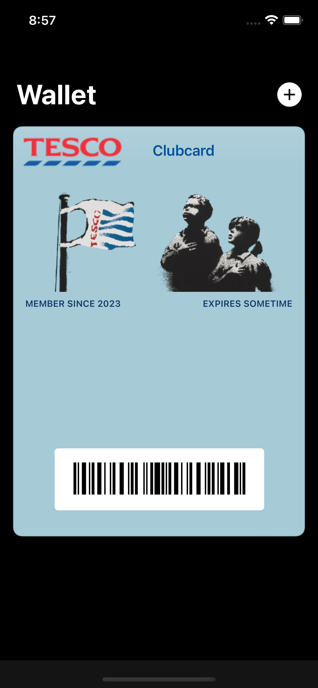

Álvaro Ramírez
My custom Tesco Clubcard pkpass
My significant other and I had two plastic Tesco Clubcards. I lost mine, so I took a picture of hers. I was fairly certain a barcode photo would scan just as well at self-checkout, and it did.
This got me thinking about Apple's Wallet pkpasses. I don't really know much about them. Could I potentially create my own .pkpass? If I could just include the same barcode as in the photo, it should do the job just fine.
Now I should mention, Tesco does have an app on the App Store. If you just want the official Wallet pass on your iPhone, use that. But I was curious about whether or not I could create my own pass.
Turns out I can. I followed Apple's building your first pass which runs you through creating Wallet identifiers/certificates, editing pass.json, and downloading/building signpass (the utility used to sign .pass bundles).
The signpass utility is included in WalletCompanionFiles.zip, which comes with a handful of sample passes.
WalletCompanionFiles │ ├── SamplePasses │ │ │ ├── BoardingPass.pass │ ├── Coupon.pass │ ├── Event.pass │ ├── Event.pkpass │ ├── Generic.pass │ └── StoreCard.pass │ │ │ ├── pass.json │ └── ... └── signpass
Being a rewards card, I opted to look into StoreCard.pass, but like all other passes, the barcode itself is what makes each pass scannable. The barcode details are specified in the bundles's pass.json file. I needed to figure out the relevant values describing the Tesco barcode.
"barcode": { "format": "???", "message": "???", "messageEncoding": "???" }
I had no clue what values I should use for a Tesco Clubcard. I did, however, have a photo of the barcode I needed. This is in fact what prompted looking into scanning barcodes from Emacs, which worked just great. It gave me all the crucial bits for the Clubcard.
"barcode": { "format": "PKBarcodeFormatCode128", "message": "1234567890123456", // not my actual Clubcard number of course. "messageEncoding": "iso-8859-1" }
That's all that's needed for the barcode section, the most useful part of the pass. We're not done though. We also need our registered Wallet identifiers, so the signpass utility can sign.
"passTypeIdentifier": "my.com.identifier.passmaker", // also not my actual one. "teamIdentifier": "AAABBBCCCD", // nor this one.
We should be able to sign the pass with the following:
signpass -p StoreCard.pass
We're technically done. We now have a working card, but it looks just like the sample store card included in WalletCompanionFiles.

What's the fun in that? Now that I can make my own Clubcard, let's customize it!
For imagery, I replaced a couple of images in the .pass bundle:
StoreCard.pass │ ├── pass.json ├── icon.png ├── logo.png // replaced └── strip.png // replaced
I replaced logo.png using a Tesco logo I found on Wikipedia. I had initially removed strip.png, but that made the card feel a little empty. I was thinking of using a Tesco carrier bag to bulk the space up. While I didn't find a suitable bag image, I did land on "Very Little Helps, 2008". Using my limited GIMP skills, I cropped one of the images and also replaced strip.png.
{kind=link}
The remaining customizations took place in pass.json and should be fairly self-explanatory. There's the text shown in all labels as well as three customizable colours (background, label, and foreground).
{
"formatVersion": 1,
"passTypeIdentifier": "my.com.identifier.passmaker", // also not my actual one.
"teamIdentifier": "AAABBBCCCD", // nor this one.
"serialNumber": "AnySerialNumberYouWant",
"barcode": {
"format": "PKBarcodeFormatCode128",
"message": "1234567890123456",
"messageEncoding": "iso-8859-1"
},
"organizationName": "Not Tesco of course",
"description": "Not a Tesco reqards card",
"logoText": "Clubcard",
"foregroundColor": "rgb(255, 255, 255)",
"labelColor": "rgb(255, 255, 255)",
"backgroundColor": "rgb(2, 81, 158)", // Blue for that Tesco look
"storeCard": {
"auxiliaryFields": [
{
"key": "membership",
"label": "Member since 2023",
"value": ""
},
{
"key": "membership2",
"label": "Expires sometime",
"value": ""
}
]
}
}
…and with all that, here's what my very own custom Tesco Clubcard pkpass looks like. As you can appreciate, my image-editing skills aren't all that great, but hey this will do for now.

Update
Redditor u/stupergenius suggested using the image's original background color. Nice suggestion. Tweaked via pass.json:
"foregroundColor": "rgb(2, 81, 158)", "labelColor": "rgb(15, 58, 105)", "backgroundColor": "rgb(166, 202, 214)",
